Project captures
Hero, one frame per scroll step (80% of the viewport) and the stitched long image. Click an image to open it.
desktop 1440×900 · 19 frames
hero.webp · 1440×900 · 55 KB
frame-01.webp · 1440×900 · 56 KB
frame-02.webp · 1440×900 · 38 KB
frame-03.webp · 1440×900 · 42 KB
frame-04.webp · 1440×900 · 57 KB
frame-05.webp · 1440×900 · 53 KB
frame-06.webp · 1440×900 · 30 KB
frame-07.webp · 1440×900 · 32 KB
frame-08.webp · 1440×900 · 29 KB
frame-09.webp · 1440×900 · 27 KB
frame-10.webp · 1440×900 · 23 KB
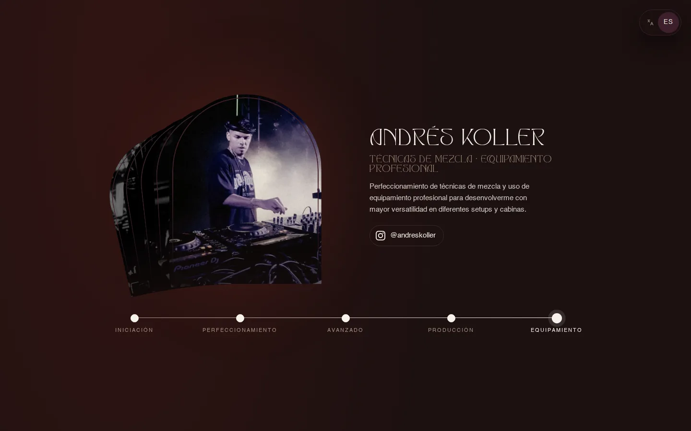
frame-11.webp · 1440×900 · 33 KB
frame-12.webp · 1440×900 · 29 KB
frame-13.webp · 1440×900 · 62 KB
frame-14.webp · 1440×900 · 101 KB
frame-15.webp · 1440×900 · 73 KB
frame-16.webp · 1440×900 · 56 KB
frame-17.webp · 1440×900 · 44 KB
frame-18.webp · 1440×900 · 40 KB
long.webp · 884×8202 · 265 KB
mobile 390×844 · 22 frames
hero.webp · 780×1688 · 55 KB
frame-01.webp · 780×1688 · 73 KB
frame-02.webp · 780×1688 · 57 KB
frame-03.webp · 780×1688 · 41 KB
frame-04.webp · 780×1688 · 23 KB
frame-05.webp · 780×1688 · 44 KB
frame-06.webp · 780×1688 · 74 KB
frame-07.webp · 780×1688 · 96 KB
frame-08.webp · 780×1688 · 59 KB
frame-09.webp · 780×1688 · 77 KB
frame-10.webp · 780×1688 · 73 KB
frame-11.webp · 780×1688 · 66 KB
frame-12.webp · 780×1688 · 56 KB
frame-13.webp · 780×1688 · 75 KB
frame-14.webp · 780×1688 · 52 KB
frame-15.webp · 780×1688 · 53 KB
frame-16.webp · 780×1688 · 90 KB
frame-17.webp · 780×1688 · 88 KB
frame-18.webp · 780×1688 · 56 KB
frame-19.webp · 780×1688 · 49 KB
frame-20.webp · 780×1688 · 52 KB
frame-21.webp · 780×1688 · 51 KB
long.webp · 322×11837 · 279 KB
desktop 1440×900 · 14 frames
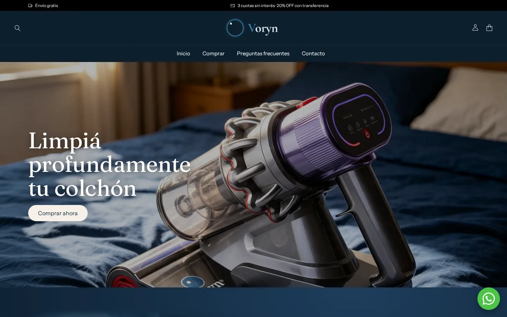
hero.webp · 1440×900 · 67 KB
frame-01.webp · 1440×900 · 50 KB
frame-02.webp · 1440×900 · 58 KB
frame-03.webp · 1440×900 · 46 KB
frame-04.webp · 1440×900 · 41 KB
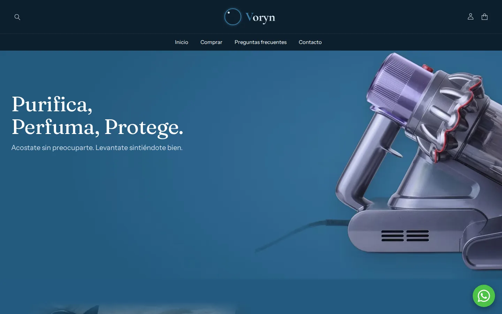
frame-05.webp · 1440×900 · 41 KB
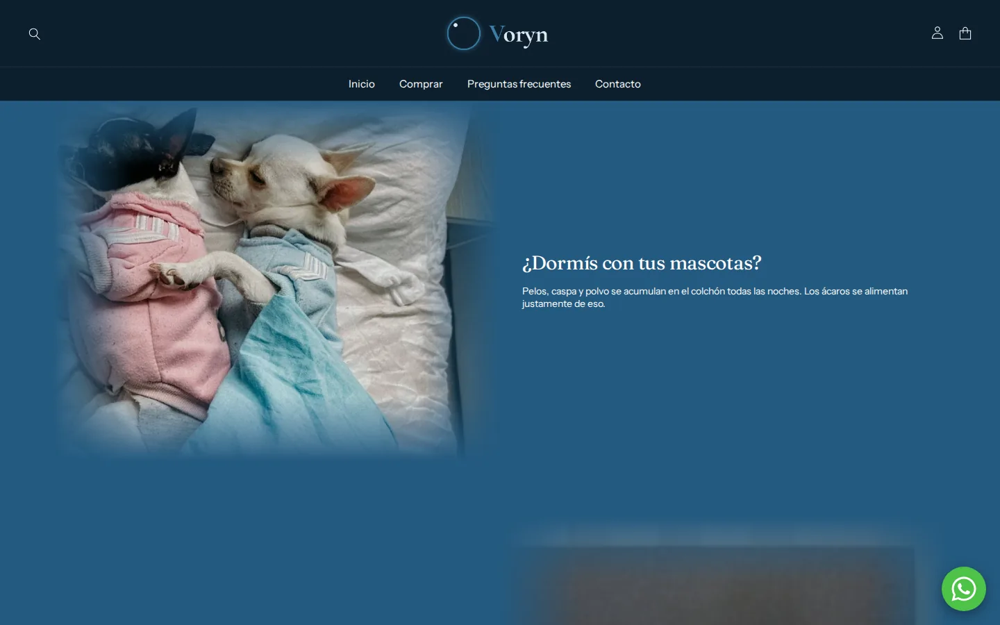
frame-06.webp · 1440×900 · 42 KB
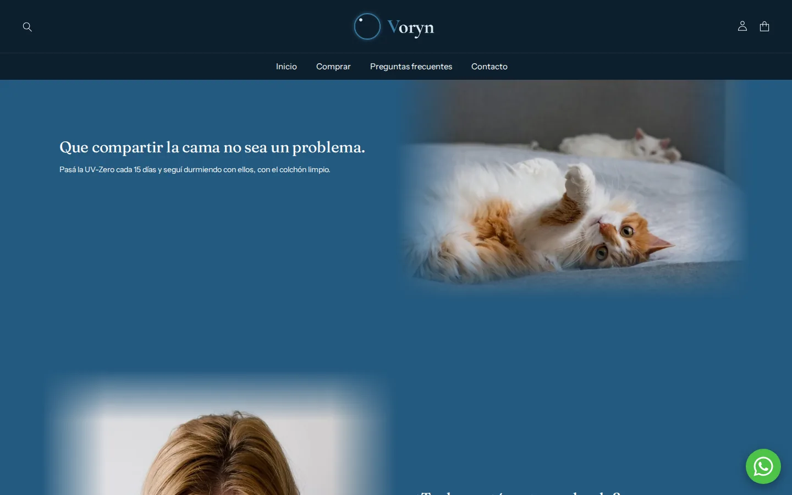
frame-07.webp · 1440×900 · 36 KB
frame-08.webp · 1440×900 · 61 KB
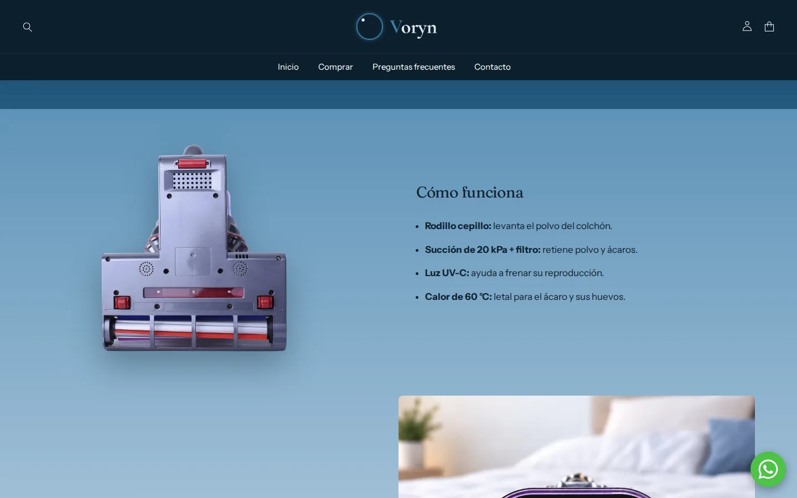
frame-09.webp · 1440×900 · 34 KB
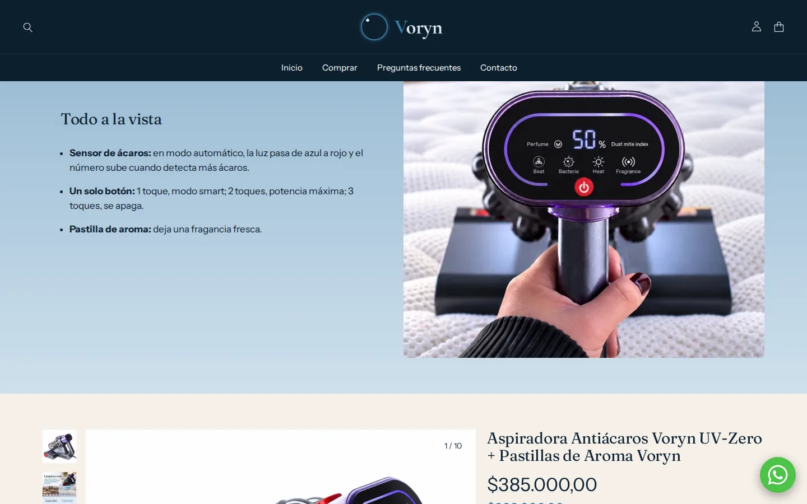
frame-10.webp · 1440×900 · 64 KB
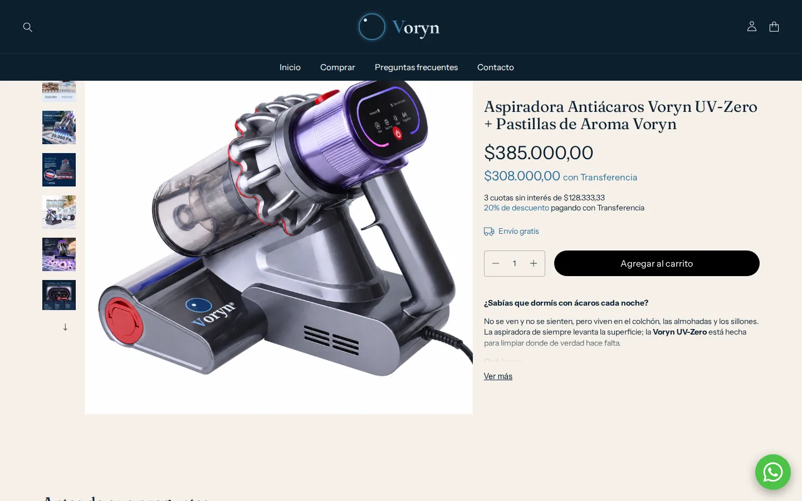
frame-11.webp · 1440×900 · 74 KB
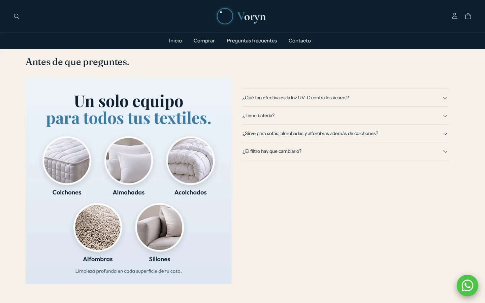
frame-12.webp · 1440×900 · 46 KB
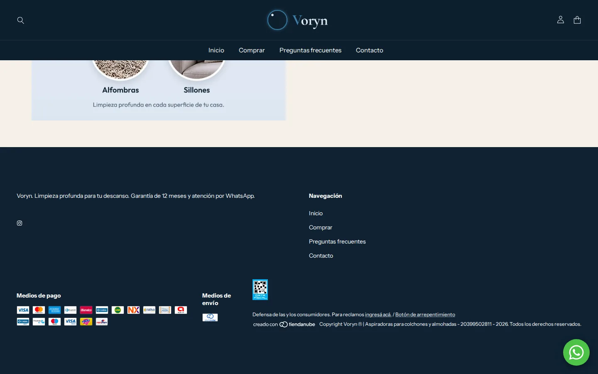
frame-13.webp · 1440×900 · 36 KB
mobile 390×844 · 18 frames
hero.webp · 780×1688 · 57 KB
frame-01.webp · 780×1688 · 70 KB
frame-02.webp · 780×1688 · 86 KB
frame-03.webp · 780×1688 · 60 KB
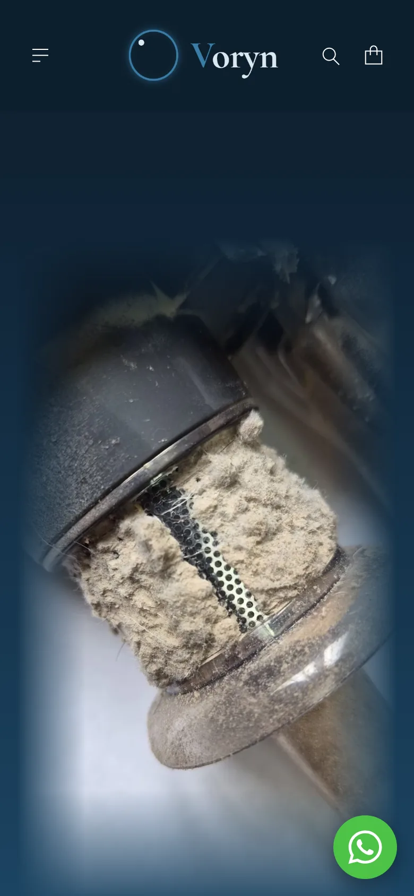
frame-04.webp · 780×1688 · 62 KB
frame-05.webp · 780×1688 · 61 KB
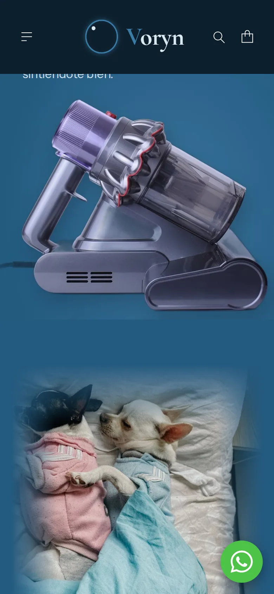
frame-06.webp · 780×1688 · 68 KB
frame-07.webp · 780×1688 · 51 KB
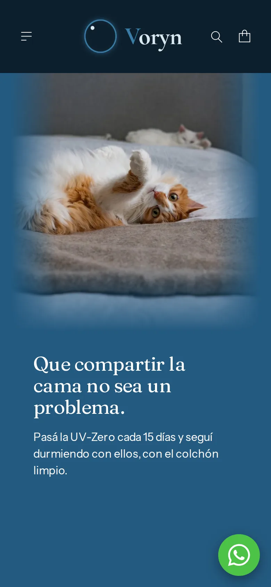
frame-08.webp · 780×1688 · 49 KB
frame-09.webp · 780×1688 · 71 KB
frame-10.webp · 780×1688 · 64 KB
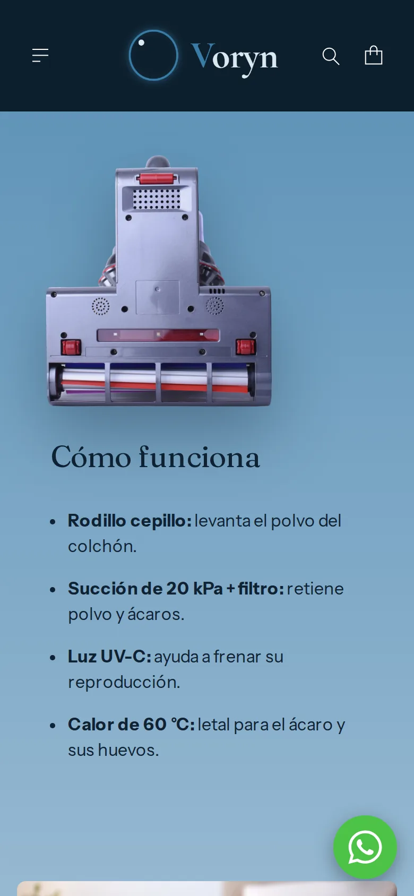
frame-11.webp · 780×1688 · 42 KB
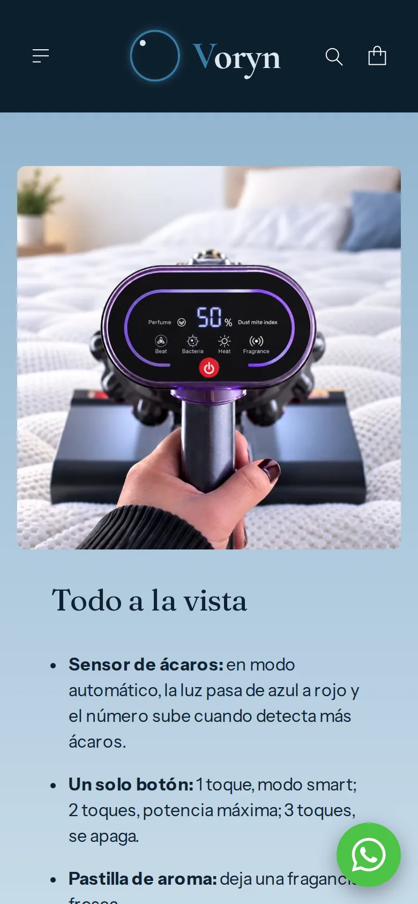
frame-12.webp · 780×1688 · 73 KB
frame-13.webp · 780×1688 · 69 KB
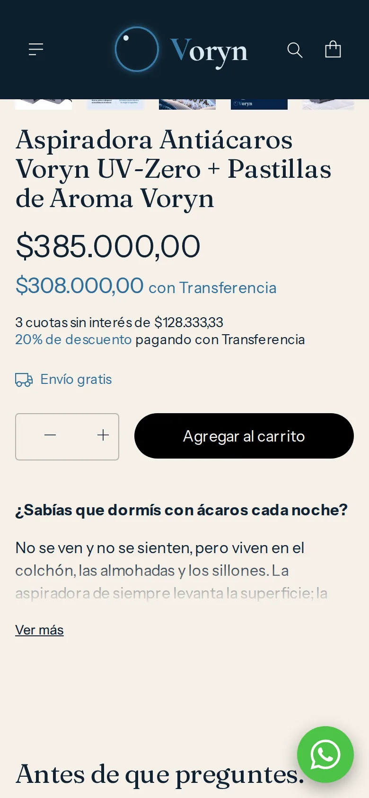
frame-14.webp · 780×1688 · 77 KB
frame-15.webp · 780×1688 · 66 KB
frame-16.webp · 780×1688 · 41 KB
frame-17.webp · 780×1688 · 50 KB
long.webp · 386×11837 · 282 KB